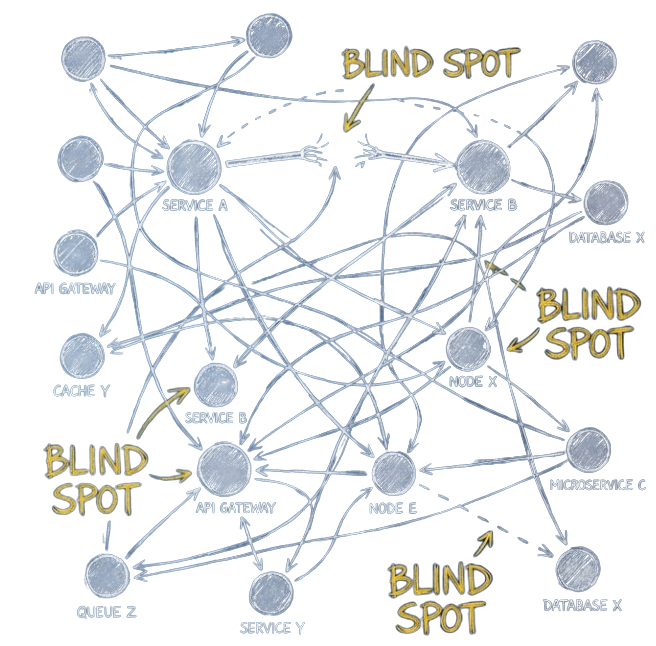
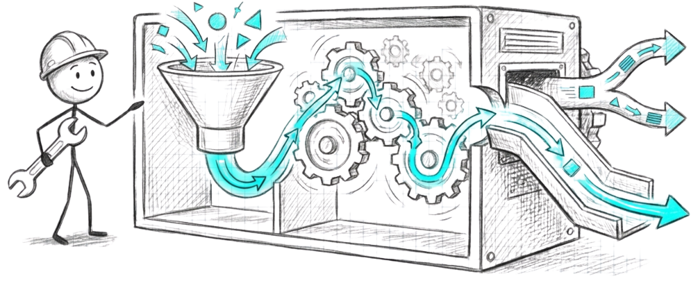
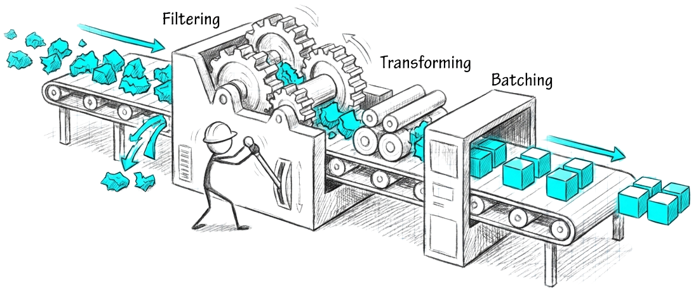
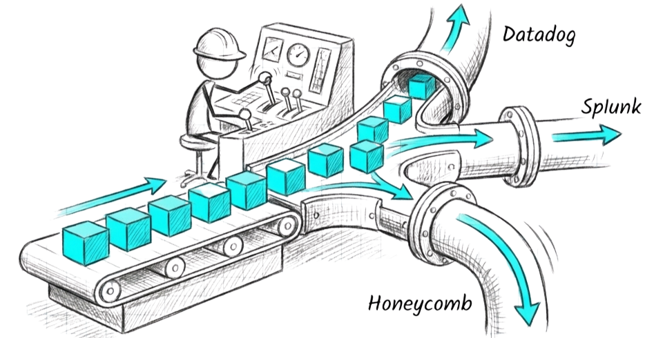
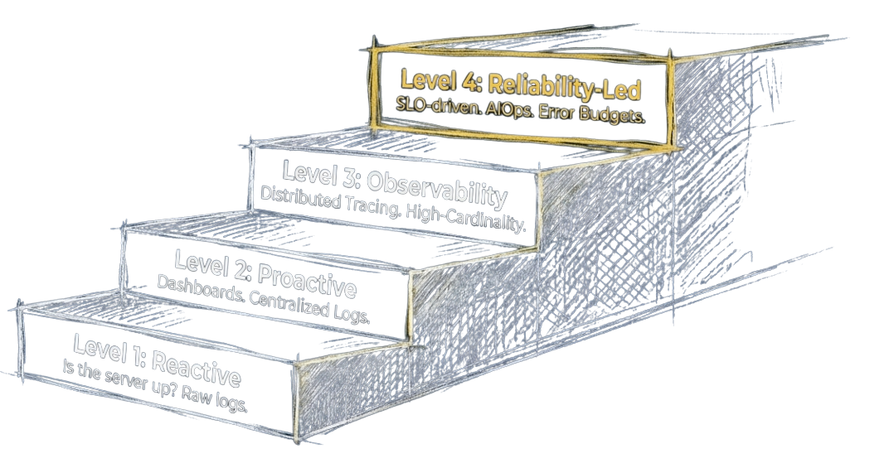

Modern Observability
Beyond Monitoring
Ken Tan - Lead Solutions Architect | Shaun Teo - Country Manager
Agenda
- The Case for Observability
- Architecture and Economics
- Operational Excellence at Scale
Why Are We Talking About Observability Now?
Biggest Pain Points
- High MTTR: Teams spend too long finding root cause, increasing outage impact.
- Alert Fatigue: Noisy alerts hide incidents that truly matter.
- Reactive Firefight: Teams respond after damage instead of preventing failures.
Before and After Observability
The Before
- Black-box effect across microservices
- High MTTR and guesswork
- Alert fatigue without user context
- Siloed logs, metrics, traces
- Reactive incident discovery
The After
- End-to-end visibility
- Faster root cause analysis
- Actionable, user-impact alerts
- Proactive optimization
- Better user experience
What is Observability
"Observability is the ability to understand a system's internal state by analyzing its external outputs, such as logs, metrics, and traces."
Red Hat
- Metrics: Fast numerical signal.
- Traces: End-to-end request journey.
- Logs: Detailed code-level events.
Monitoring vs Observability
Monitoring
The "What"
- Answers known-unknowns
- Predefined questions
- Dashboards and threshold alerts
Observability
The "Why"
- Explores unknown-unknowns
- Arbitrary queries
- Explains system behavior
Key takeaway: Monitoring tells you when; observability tells you why.
Prerequisite to Observability

The OpenTelemetry Collector
A vendor-neutral pipeline to receive, process, and route telemetry without changing app code.
- Receive: OTLP, Prometheus, Jaeger, Zipkin, and more
- Process: Batch, sample, enrich, redact
- Route: AWS and third-party backends in parallel
OTel Collector: Receiver

- OTLP First: Standard endpoint for traces, metrics, logs
- Protocol Coverage: Prometheus, Jaeger, Zipkin, Fluent Forward
- Edge or Gateway: Local sidecar/daemon or centralized gateway
OTel Collector: Processor
memory_limiter: prevent OOM in burstsbatch: reduce write and network overheadresource/attributes: normalize env/team/service- Controls: filtering, tail sampling, PII redaction, route-by-signal
OTel Collector: Exporter
- AWS destinations: CloudWatch, X-Ray, AMP
- Third-party tools: Datadog, Splunk, New Relic, etc.
- Multi-home strategy: Dual export during migration
OTel Collector: Basic Config
receivers:
otlp:
protocols:
grpc:
http:
processors:
batch:
timeout: 10s
exporters:
debug: {}
service:
pipelines:
traces:
receivers: [otlp]
processors: [batch]
exporters: [debug]
metrics:
receivers: [otlp]
processors: [batch]
exporters: [debug]
logs:
receivers: [otlp]
processors: [batch]
exporters: [debug]
OTel Collector: Advanced Config
processors:
memory_limiter:
limit_mib: 1024
resource:
attributes:
- key: environment
value: production
action: upsert
tail_sampling:
decision_wait: 10s
policies:
- name: errors
type: status_code
- name: slow-traces
type: latency
latency: { threshold_ms: 1000 }
exporters:
awsxray: {}
awsemf: {}
prometheusremotewrite:
endpoint: https://aps-workspaces.../remote_write
otlphttp:
endpoint: https://api.honeycomb.io
Production-style setup: enrichment, sampling, and multi-destination export.
The Easy Button: Auto-Instrumentation
Manual Coding
span = tracer.startSpan(...)
span.setAttribute(...)
try {
doWork()
} finally {
span.end()
}
Zero-Code Agent
java -javaagent:otel.jar -jar myapp.jar- Automatic HTTP tracing
- Automatic DB query spans
- Automatic error capture
Get ~80% visibility in minutes.
Architectural Pathways for Observability
AWS Native
Pure AWS shops, small teams, low complexity.
Managed OSS
Standards-based scaling without infra maintenance.
Third-Party SaaS
Feature-rich and fast-moving teams.
Self-Hosted OSS
Extreme scale/privacy, but heavy labor cost.
Decision Matrix
| Criteria (Weight) | AWS Native | Managed OSS | Self-Hosted |
|---|---|---|---|
| Weighted Score | 90% Best Fit |
74% Good Fit |
45% Niche Fit |
| Time to Value (30%) | Fast rollout | Fast rollout | Slower rollout |
| Security/Governance (25%) | Strong guardrails | Strong guardrails | Depends on team |
| Operational Effort (20%) | Low overhead | Moderate | Heavy |
| Cost Predictability (15%) | More predictable | Moderate | Variable |
| Customization (10%) | Good enough | High flexibility | Maximum control |
AWS Observability
Third-Party SaaS Options
The Appeal
- Polished UI and low barrier to entry
- Specialized high-cardinality features
- Mature AI anomaly/correlation insights
Trade-offs
- Data sovereignty concerns
- AWS egress costs
- Vendor premium at scale
Decision point: buy vs build on managed services.
Operational Burden Comparison
| Task | AWS Native | Managed OSS | Self-Hosted |
|---|---|---|---|
| Patch and upgrade stack | None | Minimal | Heavy |
| Scale ingestion and storage | Auto | Shared | Manual |
| 24/7 availability | Built-in | Built-in | DIY |
| Security hardening | Native | Shared | DIY |
Focus engineering effort on reliability, not observability platform upkeep.
Observability Maturity Model
Total Cost of Ownership (TCO)
| Feature | Self-Hosted OSS | Third-Party SaaS | AWS Managed |
|---|---|---|---|
| Operational Toil | High | Low | Very Low |
| Data Control | Full | Low | Full |
| Price Model | Infra + Headcount | Per Host/Metric | Pay-as-you-go |
| Flexibility | High | Low (lock-in) | High (OTel standard) |
The Real Cost: Apples to Apples
Scenario: Mid-size startup | 50 hosts | 2TB logs/month | 3 engineers
| Self-Hosted | 3rd Party SaaS | AWS Native | |
|---|---|---|---|
| Monthly profile | $1.2k infra + $12k maintenance* | $4.5k fee + $1.8k egress | $3.2k usage, $0 egress |
| 3-Year TCO | $475k | $270k+ (unpredictable) | $115k (winner) |
SLOs: Turn Reliability into an Operating Contract
- SLI: user-facing metric (good events / valid events)
- SLO: target reliability (e.g., 99.9% per 30 days)
- Error Budget: allowed failure window for controlled risk
99.9% monthly SLO = ~43 minutes budgeted unavailability.
Burn-Rate Alerting
- Healthy: no page
- Fast burn: ticket + team alert
- Exhaustion risk: immediate page
Smart Sampling: Quality vs Cost
Head Sampling
- Decision made at request start
- Lowest cost
- Can miss rare errors
- Best for high-volume healthy traffic
Tail Sampling
- Decision made after request completion
- Medium cost (buffer required)
- Captures 100% of errors/slow traces
- Best for intermittent issue debugging
Observe 100% of failures without paying for 100% of successes.
Demo
Observability Is Not Set-and-Forget
A full-time operating discipline, not a one-time installation.
- Systems change daily: new blind spots from ongoing delivery
- Signals degrade: dashboards drift, alerts get noisy
- Ownership moves: standards and SLOs require active maintenance
- Optimization never stops: cost/perf/reliability need continuous tuning
Conclusion and Call to Action
Observability is a journey, not a product.
- Audit blind spots: identify where you are flying blind
- Pilot ADOT on one critical microservice
- Deploy with confidence: shift from reactive to proactive
"Give engineers the confidence to deploy on Friday afternoon."